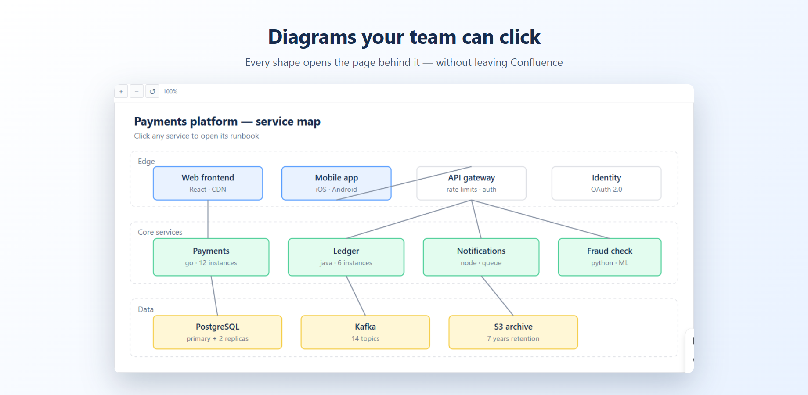
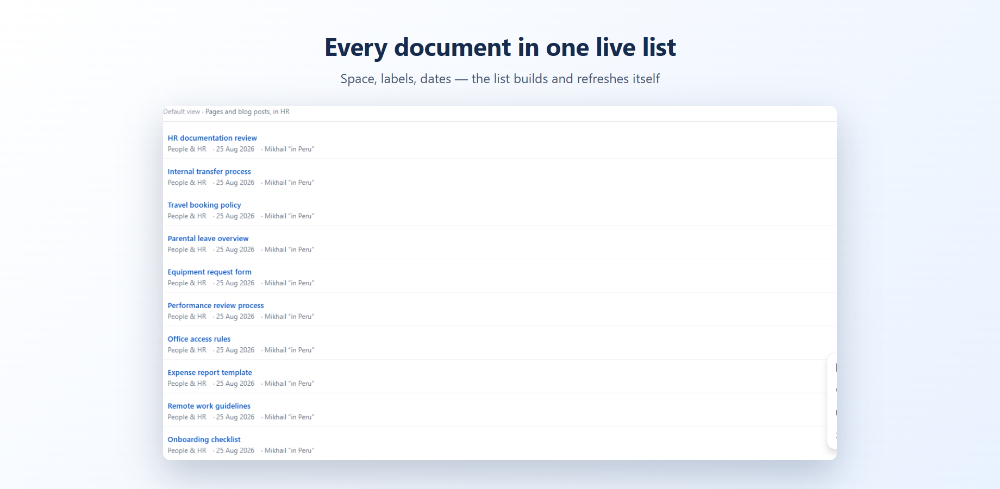
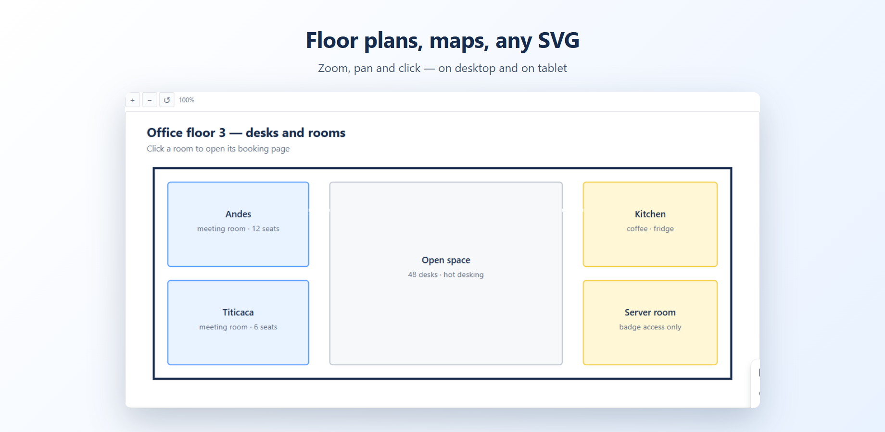
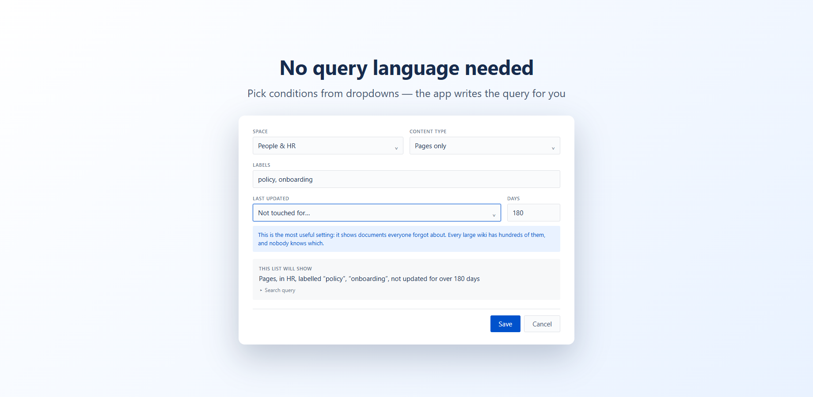

Confluence apps that fix one thing properly.
Horizon Ventures builds small apps for Confluence Cloud. Four so far: diagrams that keep their links, page lists that keep themselves current, tables that leave as spreadsheets, and Word documents that arrive as a page tree.
Clickable SVG
Show SVG diagrams in Confluence with every link inside them working — safely, and without breaking when pages move.
-
Every shape becomes a link
Click a box in your architecture map to open its runbook. Click a room on a floor plan to book it. The diagram stops being a picture and becomes a way to navigate.
-
Links that survive a reorganisation
Links point at the page itself, not at its address. Rename a page or move it to another space and the diagram keeps working.
-
Safe by design, and honest about it
SVG files can hide scripts — that is why Confluence will not render them live. Every dangerous element is stripped before display, and the app tells you what it removed.
Free for teams up to 10. Above that, $2 per user per month.

Smart Search
Build live lists of Confluence pages from simple conditions. No query language, no manual updating, and the team sees the list rather than an admin screen.
-
Ask in plain conditions
Pick a space, some labels, "not updated for six months". The app shows in plain English what the list will contain before you save it.
-
The list keeps itself current
When a page is updated it leaves the list on its own. Nobody has to maintain a page of links that went stale months ago.
-
On a page, not in space settings
The native content manager answers a similar question for administrators, one space at a time. This sits on an ordinary page the whole team can open, spans several spaces, and needs no Premium plan.
Free for teams up to 10. Above that, $1 per user per month.
Install from the Atlassian Marketplace · full description, documentation and pricing

Table Export
Budgets, registries and checklists live in Confluence tables. The moment somebody needs to sum them, chart them or send them on, the copying starts — and the first merged cell ruins the columns.
-
One table, one page, or a whole space
Every table in the space collected into a single workbook with a sheet per table, instead of a folder of files nobody will merge afterwards.
-
Merged cells stop breaking the file
The value is repeated in every cell the merge covered, so columns stay aligned and nobody sums the wrong one.
-
CSV or Excel, your choice
Numbers stay numbers and dates stay dates, rather than arriving as text that Excel refuses to add up.
Free for teams up to 10. Above that, $1.50 per user per month.

Word Import
The move to Confluence stalls for the same reason everywhere: a hundred and fifty regulations sit in Word files, and each one takes twenty minutes to copy across by hand. That is a week of work nobody was given.
-
No 30-file ceiling
The built-in import takes up to 30 files and 50 MB at a time, with no file over 10 MB. Drop in as many as you have, or pick documents already attached to the page.
-
A page tree, not one endless page
Documents are split by heading level, so a ninety-page regulation becomes a readable structure instead of a wall of text.
-
Files never leave your browser
The documents are read locally and turned into pages through Confluence itself. Nothing is uploaded to a third party, which matters when the files are contracts and HR policies.
Free for teams up to 10. Above that, $2 per user per month.

Straight answers for Confluence admins
Each one starts with the answer, says honestly what Confluence does out of the box, and only then mentions where our apps help.
-
How to list Confluence pages on a page without writing CQL
Four native macros, twelve filters and no query language. Where each one stops, and what the content manager does instead.
-
How to split a Word document into multiple Confluence pages
Cloud makes one page per file. The free way around it runs through Word's outline view, with the hours it costs.
-
How to sum a column in a Confluence table
Tables have no formulas, databases total a field but never a row. The three real options, and when a spreadsheet is the honest answer.
-
Diagrams in Confluence: four approaches compared
draw.io, Mermaid, PlantUML or an attached SVG, chosen by the only question that matters: who edits the diagram next year.
-
What to check before installing a Confluence app
Where your data goes, what the Marketplace badges really mean, how to spot an abandoned app, and what uninstalling leaves behind.
-
Getting a Confluence table into Excel
There is no native export. The free routes that work, the merged-cell trap that quietly shifts your columns, and the point where copying by hand stops being reasonable.
-
Importing Word documents into Confluence, and where the built-in import stops
The built-in import step by step, what survives the trip, what quietly breaks, and the arithmetic that tells you whether your migration is an afternoon or four working days.
-
Finding the pages nobody maintains any more
What search filters and CQL can do, why a snapshot audit goes stale itself, and a routine that survives past the second quarter.
-
Why Confluence flattens your SVG, and what actually works
The security reason behind it, what exactly stops working, the free workarounds that really exist in Cloud, and where the advice you find online applies to the wrong Confluence.
Replacing an app that is going away
Atlassian is switching off Connect apps, and a number of well-used Confluence apps have stopped being maintained. If you landed here because one of yours died, start with the write-up for your case.
-
Can you import a Word document into an existing Confluence page?
Cloud always creates a new page. The four workarounds, and what paste from Word quietly breaks.
-
What a Confluence space export actually gives you
Four formats, an admin-only button, and several things that vanish without a warning.
-
Cloud Fortified is retiring: what app badges mean now
Submissions closed on 1 September 2026, the programme ends on 31 December, and Atlassian Enterprise Certified takes over.
-
SVG out is gone. What to use instead
What you actually lose, what the free options cover, and how to move diagrams over without redoing the pages.
-
Your Mermaid app stopped being maintained
Several Mermaid renderers are abandoned. You may not need to pay at all, and here is how to tell.
-
PlantUML in Confluence, after the abandoned apps
The same question for PlantUML diagrams, with the free renderers compared honestly.
-
CQL Search alternative
What to do when the app that built your page lists is no longer updated.
-
Connect end of life, in plain words
What a Confluence admin actually has to do, how to check your own site, and how big the problem really is.
Will we still be here next year?
A fair question to ask a company you have never heard of. You have probably already been burned: SVG out is gone, several Mermaid apps stopped being maintained, and Connect apps are being switched off.
-
There is no server of ours to switch off
Both apps run entirely on Atlassian infrastructure under the Runs on Atlassian programme. We pay no hosting bill, so there is no month where keeping them alive stops being worth it.
-
Nothing of yours reaches us
Your pages, diagrams and attachments stay inside your own Confluence site. We could not see them if we wanted to.
-
If we did stop, nothing of yours is trapped
Your diagrams remain ordinary attachments on your pages, exactly as they were before the app was installed. Uninstalling takes the macro away, not your work.
-
Support reaches the person who wrote the code
There is no queue and no first line. Write to the address in the footer and you get an answer from the developer, usually the same day.
-
A registered company, not an anonymous handle
Horizon Ventures E.I.R.L., registered in Peru, RUC 20612763888. Invoices come from that company and Atlassian pays it as the vendor of record.
And the honest half: we are new. Smart Search is on the Marketplace now, Clickable SVG is still in review, and neither has a long track record to point at yet. Both are free for teams up to ten people, which is an inexpensive way to judge them on the work rather than on our word.
About
Horizon Ventures E.I.R.L. is a one-person software company registered in Peru. It builds narrow Confluence apps: each one does a single job that Confluence leaves undone, and does it without asking your team to learn anything new.
Both apps run entirely on Atlassian infrastructure under the Runs on Atlassian programme. No data is sent to our servers, because there are none — your pages, diagrams and attachments never leave your Atlassian site.
Questions, bug reports and feature requests go to support@horizonventures.app. Support is answered in English, Spanish or Russian.